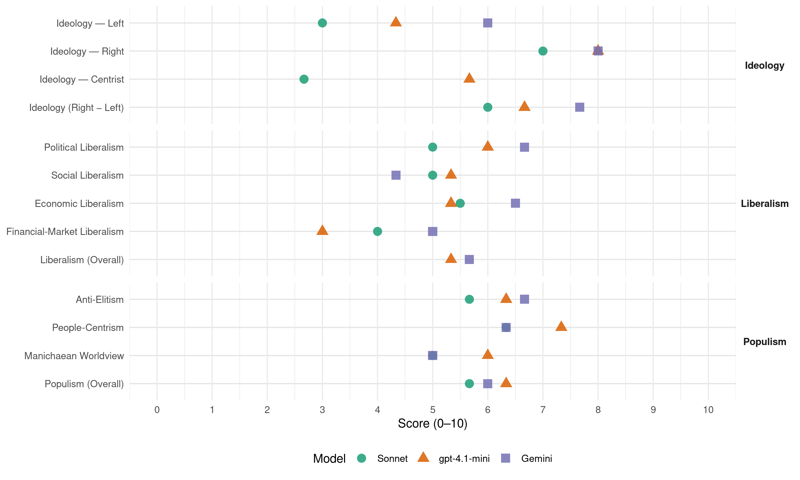

PS (Finland, 2015)
manifesto_id 14820_201504
Get full text: This site shows derived annotations and short verbatim quotes only. The full manifesto text is © Manifesto Project / WZB — obtain it via manifesto-project.wzb.eu using the manifesto_id above.
Headline scores
| Dimension | Sonnet | gpt-4.1-mini | Gemini |
|---|---|---|---|
| Populism (Overall) | 5.7 | 6.3 | 6.0 |
| Anti-Elitism | 5.7 | 6.3 | 6.7 |
| People-Centrism | 6.3 | 7.3 | 6.3 |
| Manichaean Worldview | 5.0 | 6.0 | 5.0 |
| Ideology (Right − Left) | 6.0 | 6.7 | 7.7 |
| Liberalism (Overall) | – | 5.3 | 5.7 |
| Political Liberalism | 5.0 | 6.0 | 6.7 |
| Social Liberalism | 5.0 | 5.3 | 4.3 |
| Economic Liberalism | 5.5 | 5.3 | 6.5 |
| Financial-Market Liberalism | 4.0 | 3.0 | 5.0 |
Evidence per dimension
Economic Liberalism
Gemini · score 5.0 · mixed · chunk 1
“Ylisäätelyn ja byrokratian purkaminen”
Palkka-alen sijaan yritysten työllistämiskustannuksia on alennettava… Ylisäätelyn ja byrokratian purkaminen. Yritysten hallinnollista taakkaa on kevennettävä…
Gemini · score 6.0 · verified · chunk 2
“yrittäjien toimintaedellytysten kautta”
verotulojen menetyksenä vaan myös pk-sektorin yrittäjien toimintaedellytysten kautta. Lisäksi nykyinen alkoholipolitiikka vaikeuttaa huomattavasti
Gemini · score 7.0 · verified · chunk 3
“uskottava yksityiseen yrittäjyyteen ja paikallisiin toimijoihin”
Maaseudun asioissa on uskottava yksityiseen yrittäjyyteen ja paikallisiin toimijoihin sekä paikallisiin toimintamalleihin
gpt-4.1-mini · score 6.0 · verified · chunk 1
“Ylisäätelyn ja byrokratian purkaminen. Yritysten hallinnollista taakkaa on kevennettävä”
Niin kauan kun kuulumme euroon, emme voi käyttää devalvaatiota kilpailukyvyn nopeaan parantamiseen. Perussuomalaiset eivät kuitenkaan hyväksy, että kilpailukykyä parannetaan suomen ja suomalaisten taloutta kurjistavalla palkka-alella, vaan ehdotamme seuraavia toimia kilpailukykymme palauttamiseksi: Ylisäätelyn ja byrokratian purkaminen. Yritysten hallinnollista taakkaa on kevennettävä laatimalla heti vaalikauden alussa yhdessä eri sidosryhmien kanssa hallinnollisen taakan leikkauslista.
gpt-4.1-mini · score 5.0 · verified · chunk 2
“pienpanimoiden toimintaedellytyksiä parannetaan nykyisestä”
Nykyinen alkoholipolitiikka vaikuttaa merkittävästi elinkeinoelämämme edellytyksiin myös panimoalalla. Perussuomalaiset pitävät tärkeänä, että pienpanimoiden toimintaedellytyksiä parannetaan nykyisestä.
gpt-4.1-mini · score 5.0 · verified · chunk 3
“veronkierto”
Järkevästi kohdennettu lisäsatsaus harmaan talouden poliisi- ja muuhun viranomaistutkintaan maksaa itsensä takaisin korkoineen; onhan kyseessä miljardiluokkaa oleva veronkierto.
Sonnet · score 5.0 · mixed · chunk 1
“Ylisäätelyn ja byrokratian purkaminen”
Perussuomalaiset ehdotamme seuraavia toimia kilpailukykymme palauttamiseksi: Ylisäätelyn ja byrokratian purkaminen. Yritysten hallinnollista taakkaa on kevennettävä
Sonnet · score 5.0 · verified · chunk 2
“suomalaisten toimijoiden toimintaedellytyksiä vahvistetaan ulkomaalaisiin toimijoiden nähden”
lainsäädäntöä on muutettava siihen suuntaan, että suomalaisten toimijoiden toimintaedellytyksiä vahvistetaan ulkomaalaisiin toimijoiden nähden ja parannetaan mahdollisuuksia laajentaa toimintaa globaaleille markkinoille.
Sonnet · score 6.0 · verified · chunk 3
“uskottava yksityiseen yrittäjyyteen ja paikallisiin toimijoihin”
Maaseudun asioissa on uskottava yksityiseen yrittäjyyteen ja paikallisiin toimijoihin sekä paikallisiin toimintamalleihin.
Financial-Market Liberalism
Gemini · score 5.0 · verified · chunk 1
“pk-sektorin joukkovelkakirjamarkkinoiden kehittymistä”
Pk-yritysten rahoituksen saatavuutta on parannettava esimerkiksi edistämällä pk-sektorin joukkovelkakirjamarkkinoiden kehittymistä sekä lisäämällä Finnveran pk-sektorille tarjoamaa vientirahoitusta.
gpt-4.1-mini · score 3.0 · verified · chunk 1
“Uudet euron pelastuspaketit ja muut lisälaskut EU:lta on torjuttava”
Vuoden 2016 EU-budjetin puolivälintarkastelussa Suomen ei tule hyväksyä budjettia, ellei joko EU:n budjetin kokoa tuntuvasti alenneta tai Suomi saa Tanskan ja Ruotsin tavoin EU-jäsenmaksualennusta. Uudet euron pelastuspaketit ja muut lisälaskut EU:lta on torjuttava.
Sonnet · score 5.0 · verified · chunk 1
“pk-sektorin joukkovelkakirjamarkkinoiden kehittymistä”
Pk-yritysten rahoituksen saatavuutta on parannettava esimerkiksi edistämällä pk-sektorin joukkovelkakirjamarkkinoiden kehittymistä sekä lisäämällä Finnveran
Sonnet · score 3.0 · verified · chunk 2
“Vakuutusyhtiöiden prosessit on avattava”
Vakuutusyhtiöiden prosessit on avattava ja järjestelmän puutteet on tuotava kokonaisuudessaan päivänvaloon.
Political Liberalism
Gemini · score 5.0 · verified · chunk 1
“kansalaisen oikeusturvaa vaarantamatta”
Lisäksi on siirryttävä käyttämään yhden valituksen periaatetta, aina kun se on kansalaisen oikeusturvaa vaarantamatta mahdollista.
Gemini · score 7.0 · verified · chunk 2
“tasavertaista kohtelun lain edessä”
oikeudenmukainen ja läpinäkyvä, ja turvaa kaikille ihmisille tasavertaista kohtelun lain edessä. Vammaispalvelut Perussuomalaiset pitävät tärkeänä
Gemini · score 8.0 · verified · chunk 3
“poliitikoista riippumaton perustuslakituomioistuin”
valtiotasollemme tarvitaan poliitikoista riippumaton perustuslakituomioistuin. 2.9Uusi suunta
gpt-4.1-mini · score 5.0 · verified · chunk 1
“Perussuomalaiset pitävät tärkeänä, että nyt selvitetään eri vaihtoehtojen tuomat mahdollisuudet, mutta myös niiden heikkoudet”
Sote-palvelut – rakenne ja rahoitus Sosiaali- ja terveydenhuollon uudistus on tulevaisuudessa välttämättöntä tehdä. On selvää, että nykyisenkaltainen järjestelmä ei ole kestävällä pohjalla. On myös selvää, että järjestelmän on tulevaisuudessa oltava kustannustehokkaampi ja osaltaan vastattava kestävyysvajeen haasteisiin. Sitä ei kuitenkaan saa tehdä hinnalla millä hyvänsä. Ensisijaisena johtotähtenä tulee olla järjestelmä, joka lähtee ihmisen palvelujen saatavuudesta ja saavutettavuudesta, mutta myös vahvistaa henkilöstön hyvinvointia ja työssä jaksamista. Perussuomalaiset pitävät tärkeänä, että nyt selvitetään eri vaihtoehtojen tuomat mahdollisuudet, mutta myös niiden heikkoudet.
gpt-4.1-mini · score 7.0 · verified · chunk 2
“Perustuslain mukaan jokainen on velvollinen osallistumaan isänmaan puolustukseen”
Perustuslain mukaan jokainen on velvollinen osallistumaan isänmaan puolustukseen tai avustamaan sitä. Yleinen asevelvollisuus on kustannustehokas ja ainoa realistinen tapa ylläpitää puolustusta Suomen kaltaisessa maassa.
gpt-4.1-mini · score 6.0 · verified · chunk 3
“Perustuslakituomioistuin tarvitaan”
Eduskunnan perustuslakivaliokunnan toiminnassa on ongelmana poliittisen tulkinnan mahdollisuus oikeudellisen tulkinnan sijaan. Siksi Perussuomalaisten mielestä ylimmälle valtiotasollemme tarvitaan poliitikoista riippumaton perustuslakituomioistuin.
Sonnet · score 5.0 · verified · chunk 1
“kansalaisten oikeusturvaa vaarantamatta mahdollista”
siirryttävä käyttämään yhden valituksen periaatetta, aina kun se on kansalaisen oikeusturvaa vaarantamatta mahdollista.
Sonnet · score 5.0 · mixed · chunk 2
“Länsimaisen oikeusjärjestyksen mukaan jokainen on syytön”
Länsimaisen oikeusjärjestyksen mukaan jokainen on syytön, kunnes toisin todistetaan.
Sonnet · score 5.0 · mixed · chunk 3
“poliitikoista riippumaton perustuslakituomioistuin”
Siksi Perussuomalaisten mielestä ylimmälle valtiotasollemme tarvitaan poliitikoista riippumaton perustuslakituomioistuin.
Liberalism (Overall)
Gemini · score 5.0 · verified · chunk 1
“Ylisäätelyn ja byrokratian purkaminen”
Palkka-alen sijaan yritysten työllistämiskustannuksia on alennettava… Ylisäätelyn ja byrokratian purkaminen. Yritysten hallinnollista taakkaa on kevennettävä…
Gemini · score 6.0 · verified · chunk 2
“tasavertaista kohtelun lain edessä”
oikeudenmukainen ja läpinäkyvä, ja turvaa kaikille ihmisille tasavertaista kohtelun lain edessä. Vammaispalvelut Perussuomalaiset pitävät tärkeänä
Gemini · score 6.0 · verified · chunk 3
“uskottava yksityiseen yrittäjyyteen ja paikallisiin toimijoihin”
Maaseudun asioissa on uskottava yksityiseen yrittäjyyteen ja paikallisiin toimijoihin sekä paikallisiin toimintamalleihin
gpt-4.1-mini · score 5.0 · verified · chunk 1
“Perussuomalaiset pitävät tärkeänä, että nyt selvitetään eri vaihtoehtojen tuomat mahdollisuudet, mutta myös niiden heikkoudet”
Sote-palvelut – rakenne ja rahoitus Sosiaali- ja terveydenhuollon uudistus on tulevaisuudessa välttämättöntä tehdä. On selvää, että nykyisenkaltainen järjestelmä ei ole kestävällä pohjalla. On myös selvää, että järjestelmän on tulevaisuudessa oltava kustannustehokkaampi ja osaltaan vastattava kestävyysvajeen haasteisiin. Sitä ei kuitenkaan saa tehdä hinnalla millä hyvänsä. Ensisijaisena johtotähtenä tulee olla järjestelmä, joka lähtee ihmisen palvelujen saatavuudesta ja saavutettavuudesta, mutta myös vahvistaa henkilöstön hyvinvointia ja työssä jaksamista. Perussuomalaiset pitävät tärkeänä, että nyt selvitetään eri vaihtoehtojen tuomat mahdollisuudet, mutta myös niiden heikkoudet.
gpt-4.1-mini · score 6.0 · verified · chunk 2
“YK:n vammaisten sopimuksen ratifiointi tulee saada päätökseen heti seuraavan hallituksen toimesta”
Perussuomalaiset pitävät tärkeänä, että vammaisia henkilöitä koskevaa lainsäädäntöä kehitetään aktiivisesti vastaamaan paremmin näiden henkilöiden tarpeita, ja sitä täsmennetään, jotta tulkinnanvaraisuutta ei jää liiaksi kuten nyt on tapahtunut. YK:n vammaisten sopimuksen ratifiointi tulee saada päätökseen heti seuraavan hallituksen toimesta.
gpt-4.1-mini · score 5.0 · verified · chunk 3
“Perustuslakituomioistuin tarvitaan”
Eduskunnan perustuslakivaliokunnan toiminnassa on ongelmana poliittisen tulkinnan mahdollisuus oikeudellisen tulkinnan sijaan. Siksi Perussuomalaisten mielestä ylimmälle valtiotasollemme tarvitaan poliitikoista riippumaton perustuslakituomioistuin.
Sonnet · score 5.0 · mixed · chunk 1
“Terveeseen markkinatalouteen kuuluu mahdollisuus epäonnistua”
Terveeseen markkinatalouteen kuuluu mahdollisuus epäonnistua yritystoiminnassa ilman elinikäisen velkavankeuden pelkoa.
Sonnet · score 4.0 · mixed · chunk 2
“Länsimaisen oikeusjärjestyksen mukaan jokainen on syytön”
Länsimaisen oikeusjärjestyksen mukaan jokainen on syytön, kunnes toisin todistetaan.
Sonnet · score 5.0 · mixed · chunk 3
“byrokratiaa on oleellisesti vähennettävä”
Maatalouden harjoittamiseen liittyvää sääntelyä ja byrokratiaa on oleellisesti vähennettävä. EU sääntelee maataloutta n. 25 000 sivun verran.
Anti-Elitism
Gemini · score 7.0 · verified · chunk 1
“nykyistä nöyristelypolitiikkaa”
Suomalaisia on vihdoinkin uskallettava puolustaa eikä jatkaa kansalaisille vahingollista ja miljardien lisälaskua tuovaa nykyistä nöyristelypolitiikkaa.
Gemini · score 6.0 · verified · chunk 2
“Suomen poliittinen ja tiedotuksellinen eliitti”
apua vain, jos siitä on hyötyä antavalle osapuolelle. Suomen poliittinen ja tiedotuksellinen eliitti on kuitenkin jo vuosia pyrkinyt viemään maatamme
Gemini · score 7.0 · verified · chunk 3
“Vanhojen puolueiden ja Vihreiden rikosoikeusnäkemykset”
vastaavaksi. Vanhojen puolueiden ja Vihreiden rikosoikeusnäkemykset ovat jämähtäneet 1960–1980
gpt-4.1-mini · score 7.0 · verified · chunk 1
“Suomalaisia on vihdoinkin uskallettava puolustaa eikä jatkaa kansalaisille vahingollista ja miljardien lisälaskua tuovaa nykyistä nöyristelypolitiikkaa”
Uudet euron pelastuspaketit ja muut lisälaskut EU:lta on torjuttava. Suomalaisia on vihdoinkin uskallettava puolustaa eikä jatkaa kansalaisille vahingollista ja miljardien lisälaskua tuovaa nykyistä nöyristelypolitiikkaa. Otetaan käyttöön Perussuomalaisten uusi kehitysapumalli.
gpt-4.1-mini · score 5.0 · verified · chunk 2
“hyväosaisten palvelut paranevat ja huono-osaiset jäävät entistä helpommin oman onnensa nojaan”
Yhteiskunnan ei tule monimutkaistua niin, että palveluita saavat vain ne, jotka niitä osaavat hakea. Muuten seurauksena on, että hyväosaisten palvelut paranevat ja huono-osaiset jäävät entistä helpommin oman onnensa nojaan. Ihmisen sosio-ekonomisen aseman ei tule määrittää hänen mahdollisuuksiaan saada palveluita.
gpt-4.1-mini · score 7.0 · verified · chunk 3
“Vanhojen puolueiden ja Vihreiden rikosoikeusnäkemykset ovat jämähtäneet”
Rikoslainsäädäntöä on kehitettävä nykyrikollisuuden realiteetteja vastaavaksi. Vanhojen puolueiden ja Vihreiden rikosoikeusnäkemykset ovat jämähtäneet 1960–1980 -luvuilla parhaat päivänsä nähneeseen vasemmistolais-liberaaliin menneisyyteen.
Sonnet · score 7.0 · verified · chunk 1
“vanhat puolueet ovat ihmisten tavallisesta arjesta”
osoittivat, kuinka vieraantuneita vanhat puolueet ovat ihmisten tavallisesta arjesta. Silloin kun itse on etuoikeutettu
Sonnet · score 5.0 · verified · chunk 2
“Suomen poliittinen ja tiedotuksellinen eliitti”
Suomen poliittinen ja tiedotuksellinen eliitti on kuitenkin jo vuosia pyrkinyt viemään maatamme hivuttamalla kohti Nato-jäsenyyttä. Kansa vastustaa
Sonnet · score 5.0 · verified · chunk 3
“Vanhojen puolueiden ja Vihreiden rikosoikeusnäkemykset”
Rikoslainsäädäntöä on kehitettävä nykyrikollisuuden realiteetteja vastaavaksi. Vanhojen puolueiden ja Vihreiden rikosoikeusnäkemykset ovat jämähtäneet 1960–1980 -luvuilla parhaat päivänsä nähneeseen vasemmistolais-liberaaliin menneisyyteen.
Ideology — Centrist
gpt-4.1-mini · score 6.0 · verified · chunk 1
“Perussuomalaiset eivät aja uudistuksia yhdenkään yksittäisen intressiryhmän etua ajatellen”
Uudistus tulee tehdä hallitusti ja palvelun saajan tarpeista lähtien. Perussuomalaiset eivät aja uudistuksia yhdenkään yksittäisen intressiryhmän etua ajatellen. Meille tärkeintä on palvelujen tarvitsija, asuu hän missä päin tahansa Suomea.
gpt-4.1-mini · score 5.0 · verified · chunk 2
“Yleinen asevelvollisuus on kustannustehokas ja ainoa realistinen tapa ylläpitää puolustusta Suomen kaltaisessa maassa”
Yleinen asevelvollisuus on kustannustehokas ja ainoa realistinen tapa ylläpitää puolustusta Suomen kaltaisessa maassa. Sen on oltava kattava. Kokonaan palveluksesta vapautettujen määrää tulee vähentää. Mikäli vakaumus estää aseellisen tai aseettoman varusmiespalveluksen suorittamisen, voi suorittaa siviilipalveluksen.
gpt-4.1-mini · score 6.0 · verified · chunk 3
“Vanhojen puolueiden ja Vihreiden rikosoikeusnäkemykset ovat jämähtäneet”
Rikoslainsäädäntöä on kehitettävä nykyrikollisuuden realiteetteja vastaavaksi. Vanhojen puolueiden ja Vihreiden rikosoikeusnäkemykset ovat jämähtäneet 1960–1980 -luvuilla parhaat päivänsä nähneeseen vasemmistolais-liberaaliin menneisyyteen.
Sonnet · score 3.0 · verified · chunk 1
“Perussuomalainen veropolitiikka perustuu sosiaaliseen oikeudenmukaisuuteen”
Perussuomalainen veropolitiikka perustuu sosiaaliseen oikeudenmukaisuuteen ja kannustavuuteen.
Sonnet · score 3.0 · verified · chunk 2
“tavallisten suomalaisten luontaista oikeustajua”
Ne eivät riittävästi vastaa tavallisten suomalaisten luontaista oikeustajua, etenkin kun rangaistusasteikko sinällään mahdollistaisi monissa tapauksissa tuomita tarvittaessa tuntuvampia rangaistuksia.
Sonnet · score 2.0 · verified · chunk 3
“Perussuomalainen politiikka on itsenäistä, oikeudenmukaista”
Perussuomalainen politiikka on itsenäistä, oikeudenmukaista, etujärjestöistä riippumatonta ja yhteistyökykyistä.
Ideology — Left
Gemini · score 6.0 · verified · chunk 1
“suurituloisten verotusta voidaan nostaa”
Perussuomalaiset haluavat jokaisen suomalaisen voivan tienata 1 000 euroa kuukaudessa verovapaasti. Vastaavasti suurituloisten verotusta voidaan nostaa.
gpt-4.1-mini · score 4.0 · verified · chunk 1
“Perussuomalainen veropolitiikka perustuu sosiaaliseen oikeudenmukaisuuteen ja kannustavuuteen”
Verotusta oikeudenmukaistettava ja kohtuullistettava Perussuomalainen veropolitiikka perustuu sosiaaliseen oikeudenmukaisuuteen ja kannustavuuteen. Jokaisen työhön kykenevän suomen kansalaisen on maksukykynsä mukaan maksettava veroja, jotta valtio pystyy hoitamaan tehtävänsä.
gpt-4.1-mini · score 6.0 · verified · chunk 2
“Ihmisen sosio-ekonomisen aseman ei tule määrittää hänen mahdollisuuksiaan saada palveluita”
Muuten seurauksena on, että hyväosaisten palvelut paranevat ja huono-osaiset jäävät entistä helpommin oman onnensa nojaan. Ihmisen sosio-ekonomisen aseman ei tule määrittää hänen mahdollisuuksiaan saada palveluita. Palvelujen kehittämisessä tulee huomioida eri asiakasryhmien kyvyt ja tarpeet.
gpt-4.1-mini · score 3.0 · verified · chunk 3
“veronkierto”
Järkevästi kohdennettu lisäsatsaus harmaan talouden poliisi- ja muuhun viranomaistutkintaan maksaa itsensä takaisin korkoineen; onhan kyseessä miljardiluokkaa oleva veronkierto.
Sonnet · score 6.0 · verified · chunk 1
“pienituloisten ostovoimaa, sekä parantaisi työn”
Tämä uudistus tukisi pieni- ja keskituloisten ostovoimaa, sekä parantaisi työn vastaanottamisen kannattavuutta.
Sonnet · score 2.0 · verified · chunk 2
“Ihmisen sosio-ekonomisen aseman ei tule määrittää”
Ihmisen sosio-ekonomisen aseman ei tule määrittää hänen mahdollisuuksiaan saada palveluita.
Sonnet · score 1.0 · verified · chunk 3
“vasemmistolais-liberaaliin menneisyyteen”
Vanhojen puolueiden ja Vihreiden rikosoikeusnäkemykset ovat jämähtäneet 1960–1980 -luvuilla parhaat päivänsä nähneeseen vasemmistolais-liberaaliin menneisyyteen.
Ideology (Right − Left)
Gemini · score 7.0 · verified · chunk 1
“leikkaukset on aloitettava maahanmuuton”
Perussuomalaisille valtion tärkein tehtävä on kansalaisten turvallisuudesta ja hyvinvoinnista huolehtiminen, joten leikkaukset on aloitettava maahanmuuton ja kehitysavun tapaisista maailmanparannusmenoista.
Gemini · score 7.0 · verified · chunk 2
“suomen kieltä tuetaan ja vaalitaan suomalaista”
Perussuomalaiset edellyttävät, että suomen kieltä tuetaan ja vaalitaan suomalaista yhteiskuntaa ja kansalaisia yhdistävänä kielenä.
Gemini · score 9.0 · verified · chunk 3
“maahanmuuttopolitiikan pitää perustua kansallisen edun puolustamiseen”
vahinkoa Suomelle. Maahanmuuttopolitiikan pitää perustua kansallisen edun puolustamiseen, ei sinisilmäiseen maailmansyleilyyn
gpt-4.1-mini · score 7.0 · verified · chunk 1
“Suomalaisia on vihdoinkin uskallettava puolustaa eikä jatkaa kansalaisille vahingollista ja miljardien lisälaskua tuovaa nykyistä nöyristelypolitiikkaa”
Uudet euron pelastuspaketit ja muut lisälaskut EU:lta on torjuttava. Suomalaisia on vihdoinkin uskallettava puolustaa eikä jatkaa kansalaisille vahingollista ja miljardien lisälaskua tuovaa nykyistä nöyristelypolitiikkaa. Otetaan käyttöön Perussuomalaisten uusi kehitysapumalli.
gpt-4.1-mini · score 6.0 · verified · chunk 2
“Yleinen asevelvollisuus on kustannustehokas ja ainoa realistinen tapa ylläpitää puolustusta Suomen kaltaisessa maassa”
Yleinen asevelvollisuus on kustannustehokas ja ainoa realistinen tapa ylläpitää puolustusta Suomen kaltaisessa maassa. Sen on oltava kattava. Kokonaan palveluksesta vapautettujen määrää tulee vähentää. Mikäli vakaumus estää aseellisen tai aseettoman varusmiespalveluksen suorittamisen, voi suorittaa siviilipalveluksen.
gpt-4.1-mini · score 7.0 · verified · chunk 3
“Vanhojen puolueiden ja Vihreiden rikosoikeusnäkemykset ovat jämähtäneet”
Rikoslainsäädäntöä on kehitettävä nykyrikollisuuden realiteetteja vastaavaksi. Vanhojen puolueiden ja Vihreiden rikosoikeusnäkemykset ovat jämähtäneet 1960–1980 -luvuilla parhaat päivänsä nähneeseen vasemmistolais-liberaaliin menneisyyteen.
Sonnet · score 7.0 · verified · chunk 1
“Maahanmuuttajien sosiaaliturvaan on uskallettava puuttua”
Maahanmuuttajien sosiaaliturvaan on uskallettava puuttua ja myös heille asettaa vaateita sen suhteen.
Sonnet · score 5.0 · verified · chunk 2
“Meidän tulee perusteellisesti tarkastaa, keitä maahamme tulee”
Merkittävä osa turvallisuuspolitiikassa on myös rajavalvonnalla, maahanmuuttopolitiikalla ja poliisin toimintaedellytyksillä. Meidän tulee perusteellisesti tarkastaa, keitä maahamme tulee.
Sonnet · score 6.0 · verified · chunk 3
“kansallisen edun puolustamiseen, ei sinisilmäiseen maailmansyleilyyn”
Maahanmuuttopolitiikan pitää perustua kansallisen edun puolustamiseen, ei sinisilmäiseen maailmansyleilyyn.
Ideology — Right
Gemini · score 8.0 · verified · chunk 1
“leikkaukset on aloitettava maahanmuuton”
Perussuomalaisille valtion tärkein tehtävä on kansalaisten turvallisuudesta ja hyvinvoinnista huolehtiminen, joten leikkaukset on aloitettava maahanmuuton ja kehitysavun tapaisista maailmanparannusmenoista.
Gemini · score 7.0 · verified · chunk 2
“suomen kieltä tuetaan ja vaalitaan suomalaista”
Perussuomalaiset edellyttävät, että suomen kieltä tuetaan ja vaalitaan suomalaista yhteiskuntaa ja kansalaisia yhdistävänä kielenä.
Gemini · score 9.0 · verified · chunk 3
“maahanmuuton kustannusten annetaan jatkuvasti paisua”
oikeustajua koettelee se, että maahanmuuton kustannusten annetaan jatkuvasti paisua. Turvapaikkajärjestelmän ja perheenyhdistämismenettelyn
gpt-4.1-mini · score 8.0 · verified · chunk 1
“Ulkomaalaisten työntekijöiden halpatyömarkkinoiden syntymisen estämiseksi EU- ja ETA-maiden ulkopuolisen työvoiman tarveharkinta on säilytettävä”
Työttömyyden torjumiseksi myös aktiivisen työvoimapolitiikan resursseja on lisättävä. Nuorisotyöttömyyden lisäksi myös yli 50-vuotiaiden työttömien määrä on noussut hälytyttävälle tasolle. Nuorisotakuun resurssit on turvattava. Lisäksi yli 50-vuotiaille työttömille on laadittava nuorisotakuun tapainen toimenpidekokonaisuus: työuratakuu, jolla varmistetaan työkykyisten ja -haluisten ikääntyneiden työuran jatkuminen eläkeikään saakka. Ulkomaalaisten työntekijöiden halpatyömarkkinoiden syntymisen estämiseksi EU- ja ETA-maiden ulkopuolisen työvoiman tarveharkinta on säilytettävä.
gpt-4.1-mini · score 7.0 · verified · chunk 2
“Suomen puolustuksen ja maanpuolustustahdon ydin on kautta vuosikymmenten ollut yleinen asevelvollisuus”
Suomen puolustuksen ja maanpuolustustahdon ydin on kautta vuosikymmenten ollut yleinen asevelvollisuus, joka varusmiespalveluksen ja sen jälkeisen reserviläisyyden kautta on yhdistänyt erilaisista taustoista ja sosiaalisista ryhmistä lähtöisin olevia nuoria pitäen yllä yhteistä tavoitetta: isänmaan puolustamista kaikissa tilanteissa.
gpt-4.1-mini · score 9.0 · verified · chunk 3
“Turvalliseen Suomeen eivät rikollisjengit kuulu”
Järjestäytyneeseen rikollisuuteen on puututtava voimakkaasti. Turvalliseen Suomeen eivät rikollisjengit kuulu. Jengien ja jengiläisten lukumäärän kasvu viime vuosina osoittaa, että nykyinen lainsäädäntö ja resurssit eivät riitä.
Sonnet · score 8.0 · verified · chunk 1
“maahanmuuton ja kehitysavun tapaisista maailmanparannusmenoista”
leikkaukset on aloitettava maahanmuuton ja kehitysavun tapaisista maailmanparannusmenoista.
Sonnet · score 6.0 · verified · chunk 2
“Meidän tulee perusteellisesti tarkastaa, keitä maahamme tulee”
Merkittävä osa turvallisuuspolitiikassa on myös rajavalvonnalla, maahanmuuttopolitiikalla ja poliisin toimintaedellytyksillä. Meidän tulee perusteellisesti tarkastaa, keitä maahamme tulee.
Sonnet · score 7.0 · verified · chunk 3
“maahanmuutto ja monikulttuurisuus sinänsä olisivat tarpeellisia”
Suomen on irrottauduttava siitä 25 vuotta jatkuneesta ajatuksesta, että maahanmuutto ja monikulttuurisuus sinänsä olisivat tarpeellisia tai tavoiteltavia asioita.
Manichaean Worldview
Gemini · score 5.0 · verified · chunk 1
“vieraantuneita vanhat puolueet ovat ihmisten tavallisesta arjesta”
Lapsilisän leikkaaminen sekä siihen nivoutuva indeksileikkaus olivat täysin kestämättömiä päätöksiä, ja ne osoittivat, kuinka vieraantuneita vanhat puolueet ovat ihmisten tavallisesta arjesta.
Gemini · score 4.0 · verified · chunk 2
“ihmisten mielivaltainen pompottelu on tältäkin osin loputtava”
nostettava esiin seuraavan hallituksen toimesta ja ihmisten mielivaltainen pompottelu on tältäkin osin loputtava. On luotava järjestelmä, joka on oikeudenmukainen
Gemini · score 6.0 · verified · chunk 3
“rikollisten lainturva on Suomessa korkealla tasolla, tavallisten kansalaisten ei”
kriminaalipolitiikkaan Rikollisten lainturva on Suomessa korkealla tasolla, tavallisten kansalaisten ei. Rikoksesta epäillyn oikeuksia
gpt-4.1-mini · score 7.0 · verified · chunk 1
“Suomalaisia on vihdoinkin uskallettava puolustaa eikä jatkaa kansalaisille vahingollista ja miljardien lisälaskua tuovaa nykyistä nöyristelypolitiikkaa”
Uudet euron pelastuspaketit ja muut lisälaskut EU:lta on torjuttava. Suomalaisia on vihdoinkin uskallettava puolustaa eikä jatkaa kansalaisille vahingollista ja miljardien lisälaskua tuovaa nykyistä nöyristelypolitiikkaa. Otetaan käyttöön Perussuomalaisten uusi kehitysapumalli.
gpt-4.1-mini · score 4.0 · verified · chunk 2
“ihmisten mielivaltainen pompottelu on tältäkin osin loputtava”
Perussuomalaiset katsovat, että asia on nostettava esiin seuraavan hallituksen toimesta ja ihmisten mielivaltainen pompottelu on tältäkin osin loputtava. On luotava järjestelmä, joka on oikeudenmukainen ja läpinäkyvä, ja turvaa kaikille ihmisille tasavertaisen kohtelun lain edessä.
gpt-4.1-mini · score 7.0 · verified · chunk 3
“Turvalliseen Suomeen eivät rikollisjengit kuulu”
Järjestäytyneeseen rikollisuuteen on puututtava voimakkaasti. Turvalliseen Suomeen eivät rikollisjengit kuulu. Jengien ja jengiläisten lukumäärän kasvu viime vuosina osoittaa, että nykyinen lainsäädäntö ja resurssit eivät riitä.
Sonnet · score 6.0 · verified · chunk 1
“Rikkaat rikastuvat ja köyhät köyhtyvät”
Suomeen on pyritty luomaan useamman kerroksen suomalaisia. Rikkaat rikastuvat ja köyhät köyhtyvät. Tässä tavoitteessa on valitettavasti onnistuttu.
Sonnet · score 4.0 · verified · chunk 2
“vanhojen puolueiden vihreine myötäjuoksijoineen tekemä päätös”
Tositilanteessa tämä vanhojen puolueiden vihreine myötäjuoksijoineen tekemä päätös maksaa suomalaista verta.
Sonnet · score 5.0 · verified · chunk 3
“Rikollisten lainturva on Suomessa korkealla tasolla, tavallisten kansalaisten ei”
Rikollisten lainturva on Suomessa korkealla tasolla, tavallisten kansalaisten ei. Rikoksesta epäillyn oikeuksia on jatkuvasti lisätty rikoksen selvittämisen ja asianomistajien oikeuksien kustannuksella.
People-Centrism
Gemini · score 6.0 · verified · chunk 1
“suomalaisten hyvinvoinnin turvaamisen päätöksenteon keskiöön”
Perussuomalainen sosiaali- ja terveyspolitiikka asettaa suomalaisten hyvinvoinnin turvaamisen päätöksenteon keskiöön.
Gemini · score 5.0 · verified · chunk 2
“Kansa vastustaa, mutta sitä valmistellaan”
hivuttamalla kohti Nato-jäsenyyttä. Kansa vastustaa, mutta sitä valmistellaan liittymiseen muun muassa väittämällä, että
Gemini · score 8.0 · verified · chunk 3
“tavallisten suomalaisten luontaista oikeustajua”
eivät riittävästi vastaa tavallisten suomalaisten luontaista oikeustajua, etenkin kun rangaistusasteikko
gpt-4.1-mini · score 8.0 · verified · chunk 1
“Perussuomalaisille valtion tärkein tehtävä on kansalaisten turvallisuudesta ja hyvinvoinnista huolehtiminen”
Jotta valtion menoja voidaan karsia niin, ettei kansalaisten kurjuutta enää lisätä, julkisen sektorin tehtävät tulee asettaa tärkeysjärjestykseen. Perussuomalaisille valtion tärkein tehtävä on kansalaisten turvallisuudesta ja hyvinvoinnista huolehtiminen, joten leikkaukset on aloitettava maahanmuuton ja kehitysavun tapaisista maailmanparannusmenoista.
gpt-4.1-mini · score 6.0 · verified · chunk 2
“Ihmisen sosio-ekonomisen aseman ei tule määrittää hänen mahdollisuuksiaan saada palveluita”
Muuten seurauksena on, että hyväosaisten palvelut paranevat ja huono-osaiset jäävät entistä helpommin oman onnensa nojaan. Ihmisen sosio-ekonomisen aseman ei tule määrittää hänen mahdollisuuksiaan saada palveluita. Palvelujen kehittämisessä tulee huomioida eri asiakasryhmien kyvyt ja tarpeet.
gpt-4.1-mini · score 8.0 · verified · chunk 3
“tavallisten suomalaisten luontaista oikeustajua”
Ne eivät riitä vastaa tavallisten suomalaisten luontaista oikeustajua, etenkin kun rangaistusasteikko sinällään mahdollistaisi monissa tapauksissa tuomita tarvittaessa tuntuvampia rangaistuksia.
Sonnet · score 8.0 · verified · chunk 1
“Meillä on ensisijainen vastuu suomalaisista”
Emme voi olla valmiina koko maailman terveys- tai sosiaalitoimistoksi. Meillä on ensisijainen vastuu suomalaisista, ja kansallinen etu on asetettava etusijalle.
Sonnet · score 5.0 · verified · chunk 2
“Tavalliset suomalaiset luottavat yhä tuomioistuimiin”
Oikeudenmukaisuutta arvostavat suomalaiset ovat perinteisesti kunnioittaneet lakia ja järjestystä. Tavalliset suomalaiset luottavat yhä tuomioistuimiin ja poliisiin.
Sonnet · score 6.0 · verified · chunk 3
“tavallisten suomalaisten luontaista oikeustajua”
Ne eivät riittävästi vastaa tavallisten suomalaisten luontaista oikeustajua, etenkin kun rangaistusasteikko sinällään mahdollistaisi monissa tapauksissa tuomita tarvittaessa tuntuvampia rangaistuksia.
Populism (Overall)
Gemini · score 6.0 · verified · chunk 1
“vieraantuneita vanhat puolueet ovat ihmisten tavallisesta arjesta”
Lapsilisän leikkaaminen sekä siihen nivoutuva indeksileikkaus olivat täysin kestämättömiä päätöksiä, ja ne osoittivat, kuinka vieraantuneita vanhat puolueet ovat ihmisten tavallisesta arjesta.
Gemini · score 5.0 · verified · chunk 2
“Suomen poliittinen ja tiedotuksellinen eliitti”
apua vain, jos siitä on hyötyä antavalle osapuolelle. Suomen poliittinen ja tiedotuksellinen eliitti on kuitenkin jo vuosia pyrkinyt viemään maatamme
Gemini · score 7.0 · verified · chunk 3
“tavallisten kansalaisten oikeussuojaa ja turvallisuutta parannetaan”
tekoja, joilla tavallisten kansalaisten oikeussuojaa ja turvallisuutta parannetaan sekä joilla heidän
gpt-4.1-mini · score 7.0 · verified · chunk 1
“Suomalaisia on vihdoinkin uskallettava puolustaa eikä jatkaa kansalaisille vahingollista ja miljardien lisälaskua tuovaa nykyistä nöyristelypolitiikkaa”
Uudet euron pelastuspaketit ja muut lisälaskut EU:lta on torjuttava. Suomalaisia on vihdoinkin uskallettava puolustaa eikä jatkaa kansalaisille vahingollista ja miljardien lisälaskua tuovaa nykyistä nöyristelypolitiikkaa. Otetaan käyttöön Perussuomalaisten uusi kehitysapumalli.
gpt-4.1-mini · score 5.0 · verified · chunk 2
“hyväosaisten palvelut paranevat ja huono-osaiset jäävät entistä helpommin oman onnensa nojaan”
Yhteiskunnan ei tule monimutkaistua niin, että palveluita saavat vain ne, jotka niitä osaavat hakea. Muuten seurauksena on, että hyväosaisten palvelut paranevat ja huono-osaiset jäävät entistä helpommin oman onnensa nojaan. Ihmisen sosio-ekonomisen aseman ei tule määrittää hänen mahdollisuuksiaan saada palveluita.
gpt-4.1-mini · score 7.0 · verified · chunk 3
“Vanhojen puolueiden ja Vihreiden rikosoikeusnäkemykset ovat jämähtäneet”
Rikoslainsäädäntöä on kehitettävä nykyrikollisuuden realiteetteja vastaavaksi. Vanhojen puolueiden ja Vihreiden rikosoikeusnäkemykset ovat jämähtäneet 1960–1980 -luvuilla parhaat päivänsä nähneeseen vasemmistolais-liberaaliin menneisyyteen.
Sonnet · score 7.0 · verified · chunk 1
“kansalaisille vahingollista ja miljardien lisälaskua tuovaa”
Suomalaisia on vihdoinkin uskallettava puolustaa eikä jatkaa kansalaisille vahingollista ja miljardien lisälaskua tuovaa nykyistä nöyristelypolitiikkaa.
Sonnet · score 5.0 · verified · chunk 2
“Suomen poliittinen ja tiedotuksellinen eliitti”
Suomen poliittinen ja tiedotuksellinen eliitti on kuitenkin jo vuosia pyrkinyt viemään maatamme hivuttamalla kohti Nato-jäsenyyttä. Kansa vastustaa
Sonnet · score 5.0 · verified · chunk 3
“tavallisten kansalaisten oikeussuojaa ja turvallisuutta parannetaan”
Perussuomalaiset vaatii lakeja ja tekoja, joilla tavallisten kansalaisten oikeussuojaa ja turvallisuutta parannetaan sekä joilla heidän oikeustajuaan kunnioitetaan.
Social Liberalism